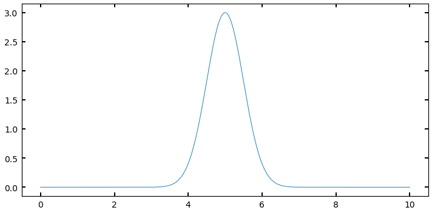

Writing a Metropolis-Hastings MCMC Sampler
(and why that’s a useful exercise)
(and why that’s a useful exercise)
Imad Pasha | March 2020
Keywords: MCMC, Metropolis-Hasting, numerical integration, object oriented programming, classes
In today’s tutorial, we’re going to discuss how to build two things:
- A simple, but powerful MCMC Sampler
- An intuition for what MCMC samplers do, and when and how to use them
Much of what I’ll be presenting today was learned in two major stages. In the first stage, I learned the basics of using “MCMC to fit stuff” – which is now a common thing in astronomy (you may have done so yourself!) In fact, this base level intuition I had for MCMC can be found in my MCMC Tutorial from a few years ago.
In the second stage, I got a few years older and wiser, and also had the privilege of having some of the fundamental ideas behind these methods explained to me by two leading experts on them (in astronomy): David Hogg and Dan Foreman-Mackey. The lectures I was in at the Flatiron Institute CCA are available online, and I recommend them. I also recommend their prescriptive paper on using MCMC, which can be found here.
The paper is a little technical, and does not contain much code – which is part of my motivation for writing up this tutorial. As Dan and David describe in their paper, the coding up of your own Metropolis-Hastings MCMC sampler is a valuable exercise: it is dead-easy to implement, and helps you develop an intuition for MCMC samplers.
Let’s dive in!
What, exactly, is a sampler?
One of the major points of Hogg & Foreman-Mackey’s paper is that, in part because of how easy tools like emcee are to use, MCMC is often misused or overused in astronomy. I am guilty of this myself. Emcee's tagline is “the MCMC hammer” and, pun aside, in my experience I started treating every problem like a nail.
Indeed, if you asked me a while ago what MCMC was, I might have answered that it is a tool for fitting models to data. And while it’s true that MCMC is good for this general task, known as inference, we can actually take a step back and understand Monte Carlo schemes from a more basic standpoint.
There is one fundamental fact that has (by now) been bored into my head:
Let me break that down a bit more. MCMC is a sampling algorithm. It generates samples from what we refer to as a posterior, but for the moment we can simply think of it as some function. By sampling, I mean the most naive thing possible — like drawing balls from a bucket. If I define some function , and I start evaluating at various points , that is a sampling. What makes what we’re going to do here more special is the statistical properties of those samples, for the problems at hand.
Solving integrals
In some sense, the only thing that MCMC is truly meant for is sampling pdfs (probability density functions). But that sounds super abstract. So let’s think about this in more real terms. Let’s say I want to integrate a function,
If I asked you to integrate , what would you do? Well, it depends on what is, right? If
you would simply tell me that
Now let’s imagine that is ugly. Ugly like one of those functions you derive halfway through a problem on a Physics midterm and you realize something must not be right because there’s no way you can integrate that ugly expression on this test (or indeed, ever).
What then?
Well, usually the answer would be either “Wolfram Alpha” or, more generally, “Numerical Integration”. Numerical integration says, “I can estimate the area under this complex curve by chunking it into finite rectangles/trapazoids/etc. and then calculate a sum”. You’ve probably heard of (or used some of these methods): midpoint rule, trapezoidal rule, simpsons rule, Gaussian quadrature… (many of these are implemented in the scipy.integrate module).
When you’re dealing with a (relatively) well behaved function in one dimension, those methods are often the way to go (and the first thing we jump to in our code). But what happens if our problem is not one dimensional? What if, for example, is a function of three spatial quantities and three additional parameters,
We now have as a vector of six parameters, meaning our integral looks more like
We can now ask ourselves,
Each scheme above has an associated error, which comes from how the scheme is integrated. From Calculus, you probably remember that the trapezoid rule usually produces smaller errors than the midpoint rule, as it better approximates the curve being traced. We can actually write down how the error of each of these scales. I’ll use the Trapezoid rule here.
where is the number of sample points (i.e., how fine our grid where we evaluate our trapezoid) and is the number of dimensions being integrated over. This is a big problem. The error in our numerical solution to the integral scales to a power of the dimensions being integrated over, which requires us to have intractably large values of N to get accurat results. This is often referred to as “the curse of dimensionality”
So how do we get around this?
What if instead of trying to “grid up” this multidimensional space and evaluate our function at each location, I simply “threw a dart” at a random location and evaluated it there? It turns out, you can show that the error in such a sampling method has an error of
Amazingly, this does not have any dependence on dimensionality! So doing a little math with the trapizoid-rule error above, we can see that for problems with dimensionality greater than ~ (for this rule, and closer to for, e.g., Simpson’s rule), the error properties of an MCMC algorithm win out, and make the integration tractable.
But how does the integral actually get computed?
Let’s back up for a moment to the 1D case of to aid in our visualization. If I draw some arbitrary function across my plot, I can evaluate the integral (area) by any of the tools above. I could also sample, which in the absolute first order case means choosing random (uniformly drawn) values over the bounds of the integrand (i.e., in the 1D case here, values of between and ), and then evaluate at those values. This is, quite literally, throwing darts to pick values (and where the method gets the Monte Carlo part of it’s name). Imagine I have my function that looks like this
My sampling, as I described it above, corresponds to something like
where the four points are presumed to have been drawn from some random uniform distribution. (so more likely, they will not be in ascending order of ).
To estimate the area under the curve, I create a rectangle for each sample with with a width of and a height of . For example, for above, this would look like

while the rectangle for would look like

We can see that sometimes I overestimate the area, and other times I underestimate it. However, I will claim here, and prove below, that the expectation value (i.e., the average) of all of these rectangles represents an accurate estimate of the integral of the function . In short, I’m asserting for the moment that the expectation value by the normal integral, i.e.,
Is going to be approximated by
Let’s explain why. In the case of a Uniform distribution, we know that our is given by, simply
That is, a uniform over some bounds is normalized at the level such that the area of the distribution is properly normalized to 1.
Recall I computed my rectangle areas as the width times the height of the function at different sample locations. I’m thus approximating my integral as
Notice though, that is just . Thus we can write our sum as what I asserted above. But why does that work? I.e., can we show that this formula actually esimates the integral?
Let’s look at the expectation value of the estimated integral . Remember, every time I use my MCMC estimator above, I’ll get a somewhat different answer because I drew random points. What we want is the mean value of many estimates of the integral, , to be the integral’s value given enough samples. This is something I can show.
The expectation value for , by the normal formula, is given by
plugging in the expression for that I asserted above.
By Lebesgue’s dominated convergence theorem, (in the limit as K goes to ), we can move the expectation value inside the sum, such that
where since the expectation value for any particular does not depend on , and is just the expectation value over the region, we can pull it out of the sum:
which, by the definition of expectation values, is just
It confused me for quite some time to think about what the expectation value on some quantity looks like, as these are just numbers. But, recall, we are talking about the expectation value , which is computed over many simulations of I (i.e., running our sampler many times). Thinking about it this way, we can see that the first term in our sum, for example,
will be different every time I run the sampler (since the is a randomly generated number). Thus the value inside this expectation can take any value allowed on given the set definite boundaries. It then becomes obvious that for this particular term in the sum, the expectation value must just be the expectation value of the function over the bounds. This is then true for every term in the sum. In short, a sum over looks just like the sum of over many runs of my MCMC.
Of course, we’ve based this derivation on a limit as , but in reality we are taking finite numbers of samples. This thus raises a question of “how many samples are needed for my approximation to be accurate?” This gets either into deep mathematics or pure hand-waving, so I’ll simply say for now that we take as many samples as is feasible, and in general if we have many independent samples we are doing O.K. (Feel free to dig more into this topic if you are interested!)
It’s useful to point out here that when doing inference problems, we’re often trying to integrate something that looks like the expectation value above, i.e., the integral of a likelihood times a prior.
Simple Monte Carlo
In the simplest case (Monte Carlo) we simply draw random (uniform) values of and compute the expectation value using the sum. We then use that expectation value, and the bounds of our integral, to solve for the area.
For example, let’s take
and I want to integrate from 1 to 2,
Obviously we know the answer to this is . Let’s solve it using Monte Carlo:
import numpy as np
from scipy import stats
import matplotlib.pyplot as plt
unif = stats.uniform(1,1) #this creates a uniform over the range [1,2]
def f(x):
return x**2
sample_sum = 0
N = 1000
for i in range(N):
s = unif.rvs()
call = f(s)
sample_sum += call
sample_sum /= N
print("integral as estimated from 1000 Samples: {}".format(sample_sum))
integral as estimated from 1000 Samples: 2.320370516496789
We know that the true value is 2.33 repeating, here we can see that with 1000 samples, we estimate the integral to be 2.32. As a note, if you haven’t seen it used before, I set up an object called unif that is an instance of the stats.uniform class, which takes arguments loc and scale and “sets up” a distribution from loc to loc+scale. I can then draw random values from that distribution using the unif.rvs() method. There are lots of other useful methods too, like .pdf(x) to evaluate the pdf, etc. But I could’ve also simply used np.random.uniform to draw values.
We can also try with a much (somewhat absurdly) higher N:
N = 100000
for i in range(N):
s = unif.rvs()
call = f(s)
sample_sum += call
sample_sum /= N
print("integral as estimated from 100,000 Samples: {}".format(sample_sum))
integral as estimated from 100,000 Samples: 2.329695672498891
We can see that in this case we’re very close, with the trailing digits rounding effectively to 2.33.
I mentioned above that the error in our estimate of the integral in this Monte Carlo scheme scaled as . We can write this more formally as
where is a constant that captures the normalization of our scaling relation. Our goal at this point is to bring down as much as possible, so that our scaling with error has a lower normalization. (In the parlance of the expectation value above, we want to reduce the variance in the estimates of I for any given sampling run.
Importance Sampling
Imagine you have a distribution that looks something like a Gaussian, defined at some range, like below:
def f2(x):
out = 3 * np.exp(-(x-5.)**2/(2*0.5**2))
return out
xx = np.linspace(0,10,1000)
y = f2(xx)
fig, ax = plt.subplots(figsize=(10,5))
ax.plot(xx,y);

I could sample this function using a . But many of my samples would be “wasted” because they would be sampling regions (like between 0 and 3, or 8 and 10) where the value of is very small, and thus the contribution to the integral is negligable. What if I had a way to throw darts that were more likely to land near 5, where I want to be well-sampled, and not as much near 10?
In order to improve my value, and assign some importance to some values of (in this case x) to sample over others, I need a new probability distribution to sample from that isn’t just the Uniform. Thinking about this for a moment, it would seem like the obvious choice is in fact, itself, (or rather, f(x) normalized such that it is a probability density function).
This would naturally capture what I want to do: where f(x) is larger, the pdf will be larger, and the chance of drawing values there will be larger than elsewhere were f(x) is smaller. In this case, instead of a pdf that is just , we will plug a real pdf into our sampling expression:
Let’s try setting up a problem using a Gaussian like above, and sample from a pdf that is the gaussian itself.
- I’ll set up my “arbitrary” function to return something that is gaussian shaped, but arbitrarily normalized.
- I then set my “pdf” distribution to be a true, normalized normal distribution at the same () (if we don’t know these values, we can approximate them).
- I repeat the exercise from before, normalizing each evaluation of my function by an evaluation of the proposal pdf at the same value
#f(x) is not normalized, it's just something with a gaussian form, as I've multiplied by a constant
def f2(x):
return 3 * np.exp(-(x-5.)**2/(2*0.5**2))
gauss = stats.norm(5,0.5) #this is my new p(theta)
N=100000
area = []
for i in range(N):
val = gauss.rvs()
call = f2(val) / gauss.pdf(val)
area.append(call)
norm_area = np.sum(area) / N
print('Calculated Area: {}'.format(norm_area))
Calculated Area: 3.759942411946498
We know analytically that the area we should get is
where here, a is 3, b is 5, and c is 0.5. This gives me a computed analytical value of:
area_theoretical = np.sqrt(2*np.pi*0.5**2)*3
area_theoretical
3.7599424119465006
We can see that once again we’ve gotten the answer almost exactly right. Note that this didn’t only work because both my sampling distribution and pdf were Gaussians with different normalization. Any that looked roughly like a “bump” could have been estimated this way. I simply chose a Gaussian because we could compare to an analytical solution.
Exercise: The value of
You might’ve heard (or seen an example like this) demonstrating that you can estimate the value of using this method. The idea is to inscribe a circle into a square, and estimate the ratio of their areas by sampling, since these will be
and thus we can get by calculating . If we adopt a uniform distribution (good for this problem, we want to sample everywhere in the square with equal probability). For each sample we draw, we just need to know whether that sample fell in the circle inscribed or in the space in between, which we can do by evaluating
for each sample. We then just divide the number of samples that meet this requirement by the total number (as all samples will fall in the square), and multiply by four. Give it a try!
-
Rerun your Monte Carlo integrator, but keep track (in arrays) of the N (the number in the circle thus far in the loop) and an intermediate calculation of , and then at the end, make a plot that shows your estimate of pi as a function of
nsteps. Place anaxhlineat the value ofnp.pi, and from the plot, make a rough estimate of how many steps you would need to hit (at least to the accuracy that it seems consistent on the plot). -
For a bonus problem: Try creating an animation similar to the one in the link I showed! Perhaps the easiest way to do this is to use the
matplotlib.widgetlibrary. For this in particular, I recommend theSlidermodule. With it, you can make a plot that allows the user to slide through number of steps, and see both the square/circle and points, along with the plot we made in the problem above, all updating. (Keep in mind, you’ll have to store not only for this to work, but also every and value sampled.
I provide a solution to this problem in the Solutions, but you should get something like this:
Or, running for a factor of ten more samples:
Now that we understand qualitatively how this process works with some simple 1D integrals, let’s go back to thinking about ugly, multidimensional integrals. In the above situation, I was able to set a sampling distribution to be my target distribution because I knew the functional form of completely. Now, if I knew it was a Gaussian but didn’t know I would have just run an optimizer on first to find the maximum, and perhaps chosen a reasonably wide spread.
But in the tougher cases, perhaps all I know is how to evaluate for some multidimensional vector , but know almost nothing about the details or shape of the distribution I’m trying to integrate. Above, I chose samples preferentially at higher likelihood because I knew ahead of time where those points would be. If I don’t I can write an algorithm to sort that out for me:
Metropolis-Hastings MCMC
We’re now getting into the real meat of this tutorial. I hope that taking the time to walk through the simpler cases above allows the following to be more clear!
The Metropolis-Hastings algorithm allows you to create a chain of evaluations of your function, which don’t depend on the initial conditions, but rather only on the evaluation immediately before. This biased “walker” is programmed to move loosely towards areas of higher probability, but occasionally will also move towards lower probability. This walker moves in “steps” that are usually a small sphere around its current location in parameter space. This allows us to very efficiently sample from the high-probability (or in terms of the integral, most important regions) even if we don’t have intimate knowledge of what that region looks like. Our only requirement at this point is that we can evaluate our function at some position and that our function as usual is positively defined over the bounds. This type of algorithm naturally treats, in practice, your ) as a probability distribution (i.e., performs importance sampling).
In the cell below, you’re going to write the algorithm. Here is the schematic:
- First, pick an initial value of and evaluate it as above. Add this to a stored “chain” of values
- Next, pick a from the proposal pdf, a pdf distribution centered on (more on this below)
- pick a number from a
- if , then move to that position and add it to the chain
- otherwise, the next position in the chain is set to be the current position (and it is added to the chain again)
What do I mean by a proposal pdf? Our walker needs to know how to choose a step to take. The easiest, and most statistically simple, method for doing this is a Gaussian (multivariate if is multivariate) with a mean of and some spread that is chosen for each given problem by the amount of parameter space being covered and how sharply varies. We’ll discuss the exact choice of more below, for now, just implement it as an input to your sampler.
So, your Sampler is going to need access to a proposal pdf, along with a function to evaluate (I find it easiest to write this as a python function, and feed the handle into the sampler so it can call it). You can use snippets from above to set up a Gaussian proposal pdf. In this cell, I won’t put any constraints on how you choose to try to code this, but below, we are going to implement this in a OOP, Class structure. So if you want to give it a shot that way, you’ll save some time!
# Write your sampler!!!!!!!
Making it pretty
I know this tutorial has had a lot of math up front, and not a lot of coding (even though this a coding website!!) The fact of the matter is that having a strong intuitive understanding for using these samplers requires more math and statistics than it does coding skill – in fact, your sampler above was probably only ~10 lines of code.
Let’s now spend the rest of the tutorial updating our sampler to be better, and also practice some basic class building, if you have not had much experience with that.
Exercise 2.0: log acceptance ratio
In our implementation above, we computed the acceptance ratio and compared to a uniform number between 0 and 1. In reality, we will likely want to avoid what are called overflows and underflows — i.e., any time the some value in the ratio gets very discrepant from the other, you can run into computational issues. One way around this is to take the log of your ratio quantities, as well as , and apply the condition
instead.
- Update your M-H Sampler to use this version of the acceptance ratio.
# Your new sampler!
Exercise 2.1: Testing our sampler
Before we can get to fancy object-oriented samplers, we should make sure our basic algorithm works.
Here are two problems from Hogg & Foreman-Mackey for you to try:
- Sample in a single parameter and give the sampler as its density function a Gaussian density with mean 2 and variance 2. (Note that variance is the square of the standard deviation.) Make the proposal distribution a Gaussian pdf for with mean and variance 1. Initialize the sampler with and run the sampler for more than steps. Plot the results as a histogram, with the true density overplotted sensibly. Your answer should look like the figure below:
Exercise 2.2: Testing in 2 dimensions
If it wasn’t set up so already, make sure your sampler is agnostic to the dimensionality (len) of the -vectors fed in. Then, do the following (also adapted from Hogg & Foreman-Mackey):
- Redo Problem 2.1, but now with an input density that is a function of two variables . For the density function use a covariant two-dimensional Gaussian density with variance tensor
- For the proposal distribution use a two-dimensional Gaussian density with mean at and variance tensor set to the two dimensional identity matrix.
Hint: scipy.multivariate.normal will be uesful for setting up the above
Once you have coded up the above, a useful way to visualize the samples is the corner package (by, you guessed it, Dan Foreman-Mackey). You can install it via pip if you don’t have it. Assuming your sampler stores the chain of values in an array with dimensions where is in this case 2 and is the number of samples you generated, simply run:
import corner
fig = corner.corner(chain)
where here chain represents my chain output from my sampler. Your result should look something like
Corner plots are useful as they show us the sample distribution for each quantity along with any covariances between them.
An object-oriented sampler
Let us now discuss how to build our sampler in a class-structure, for example, in a way we might package up and use later (or share with friends).
The obvious first step is defining the class. For those less familiar, we do this via:
class MetropolisHastings():
def __init__(self):
pass
I’ve defined my class here, and all classes need an __init__ statement with a self call. But for now, I’m not requiring the user to supply anything upon initialization of the sampler. I can set one up now by running:
sampler = MetropolisHastings()
but, my sampler doesn’t do very much yet (in fact, it does nothing).
What can we initialize that the user needs no input to whatsoever? Well, we know that during the acceptance ratio step, we need to draw a random number from , so one way or another we can set that up.
- Go back to your
__init__()function and add a line that sets the class attributeself.Uniformto be an instance ofstats.uniform()(where the defaults serve fine here).
Next let’s tackle the proposal distribution. There are, of course, options for how you implement the proposal, and in advanced cases you might care about this specifically. But for a run-of-the-mill Metropolis-Hastings, it’s fine for us to assume that our proposal distribution is going to be a multivariate Gaussian centered at .
There is only one piece of information we need to know from the user in order to know the proposal distribution: – the spread in parameter space of the Gaussian we are setting up. Let’s write a method for our class called set_proposal_sigma which takes as a parameter sigma, which should be the width of the Gaussian used to decide how far we step each step in our simulation.
You might be wondering, “what if I tend to step more in certain parameter directions than others?” The good news is, we can handle this by automatically setting up the proposal distribution as a multivariate Gaussian, and then allow sigma to be either a single float, or an array of len(theta) either of which get multiplied by an identity matrix of ndim len(theta).
- Add this
set_proposal_sigmamethod to your class, and have it setself.proposal_distributionto be an instance of ascipy.stats.multivariate_normalobject which has a covariance matrix set bysigma(the input) squared times the identity matrix of the right dimensions.
Now, we also know that our sampler needs to take in some function — the thing we are trying to sample from, and/or by taking expectation values, integrate. We can do this by adding a set_target_distribution() method, which is a simple setter — it reads in the name of some externally defined function which we desire to sample from. This external function should only have as input a vector , which could have N dimensions.
- Add this setter method to your class, which simply sets a class attribute
self.target_distributionequal to the input function
Finally, let’s split up the steps where we “initialize” our sampler (e.g., set the number of steps we want to take in our chain, and the initial vector to start with), and the actual sampling.
- Write a method
initialize()which takes as argumenttheta_init(a vector of the first to be used) andnsteps(the number of steps our simulation should take. This method also just sets class attributesself.theta_initandself.nstepsequal to those input values.
Finally, we are ready to sample! Write a sample() method for your class. It should not need any inputs (since everying should be pre-set). Have it execute the working algorithm you developed above. Once again, if a is accepted, it should be added into a chain (probably by appending to a list/array outside the loop over nsteps).
- Within your sample method, make sure the last thing is something which sets
self.posteriorto an array of your -chain. Your method should now “work”, and be used like the following:
def func_to_integrate(x):
a,b = x
do_stuff = ax + bx^2 / 2.0
return do_stuff
sampler = MetropolisHastings()
sampler.set_proposal_sigma(np.array([1,2])) #2D since my function above takes a 2d theta
sampler.set_target_distribution(func_to_integrate)
sampler.initialize(theta_init=[1,1],nsteps=1000)
sampler.sample()
After it runs, we can plot diagnostics by querying sampler.posterior. For fun, let’s write some helper methods, plot_corner() and plot_chains() to our class, which allow this to quickly happen.
-
Add a
plot_corner()method to your class which reads in the posterior array as above and plots the corner fig. -
Add a
plot_chains()method which extracts the chains of each parameter, and dynamically creates a plot with N subplots (you should stack them vertically since they share an x axis) showing the chain of each walker). -
As a bonus, go back to the initialization function, and add an input
labelsfor which you feed in a list of strings corresponding to names for each parameter that went in, and then use those to add labels to your two plotting tools here.
Finally, what about the integral??
- Add a method to your class called
calculate_integral()which uses the formulas we’ve described above, along with the posterior samples you gathered, to return the integral of the input function.
Extras
There are some bells and whistles we can add to our sampler to make it more user friendly and fun to use.
One is a simple trick for showing the progress of the MCMC, as it can take ~minutes to run for simple problems and hours for longer ones, depending on the setup.
- Outside your loop, set a variable called
counterwhich starts at 0. Inside, calculate the percentage complete this step of the sampling is by calculatingP = (counter/self.nsteps)*100. Then, use the following lines to get Python to print this percentage to the screen, but not on a new line every time:
sys.stdout.flush()
sys.stdout.write('Percentage complete: {:.2f}%'.format(P) \r')
In the above code, flushing ensures the line of print gets overwritten properly, and the \r at the end signifies a return to the start of the line. Inside the print is just string formatting to get the output to look nicer. One downside of this helpful user interface output is that for the fastest problems (usually toy problems) the printing is actually slower than the calculation. You can get around this by, e.g., only printing the percentage every 2, or 5 percentages that go by.
As an extra bonus, you can use the formalism above to write an actual progress bar. Try it out! As a hint, a string multiplied by a constant will be duplicated that many times, so '-'*5 produces -----. With a quick side calculation of how many bars you want in your progress bar, you can implement this relatively easily.
Next steps
That’s about it for this tutorial! I hope I’ve managed to (at least partially) show how MCMC methods can be used to solve integrals. If you go back to my MCMC tutorial on fitting models to data, you’ll find that underneath it all, that problem amounts to solving expectation value integrals too. I also hope you had fun implementing the M-H algorithm yourself! Obviously there are more sophisticated implementations out there, but for many basic problems, your method is actually perfectly reasonable. Best of all, you know exactly how it works. I encourage you to add more bells and whistles to your code. For example, you could add a method to let users (who want to) manually set the proposal function. Once you’re happy with it and (perhaps) want to have it handy for use in your own work, here’s a super easy way to install it on your own computer as a package:
First, make a directory somewhere. Probably somewhere you tend to install custom software (like astronomical github software). Name the directory something like `my_utilities`, or keeping it specific, something like `mcmc_integrators`.
Next, inside it, make an empty file called __init__.py and another subfolder named the same thing as the outer folder. Also make a file called setup.py containing the following (fill in):
from setuptools import setup
setup(name='your name here',
version='0.1',
description='your description',
url='e.g. a github link',
author='your name',
author_email='your email',
license='MIT',
packages=['name of subfolder'],
zip_safe=False)
Inside the identically named subfolder, create a Python file containing your M-H class. If I had named my “package” my_utilities I would now name this python file integrators (or something). How you set this up is up to you. Inside here, also create an empty file called __init__.py. (these just tell python this is a package).
Now, if you go to the toplevel folder (the one containing the setup.py file we made as well as the subfolder, you should be able to run
pip install .
And Python will install your personal package! Open a new terminal window (or close and restart) and fire up a new ipython session. You can now import your class via, e.g.,
from my_utilities.integrators import MetropolisHastings
and use it at will! You could also add other classes or functions to the integrators.py file and re-install to import them the same way. You could also add other python files inside my_utilities containing other types of helpful things, and use them in your own code.